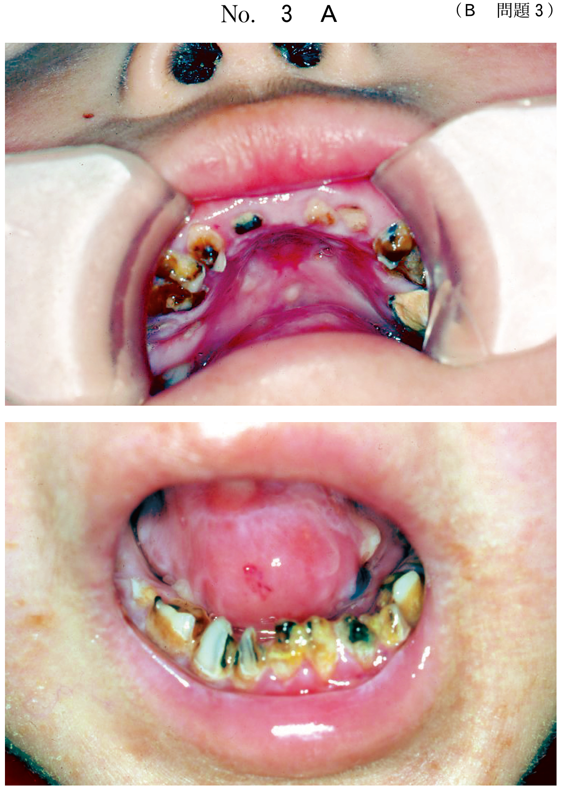
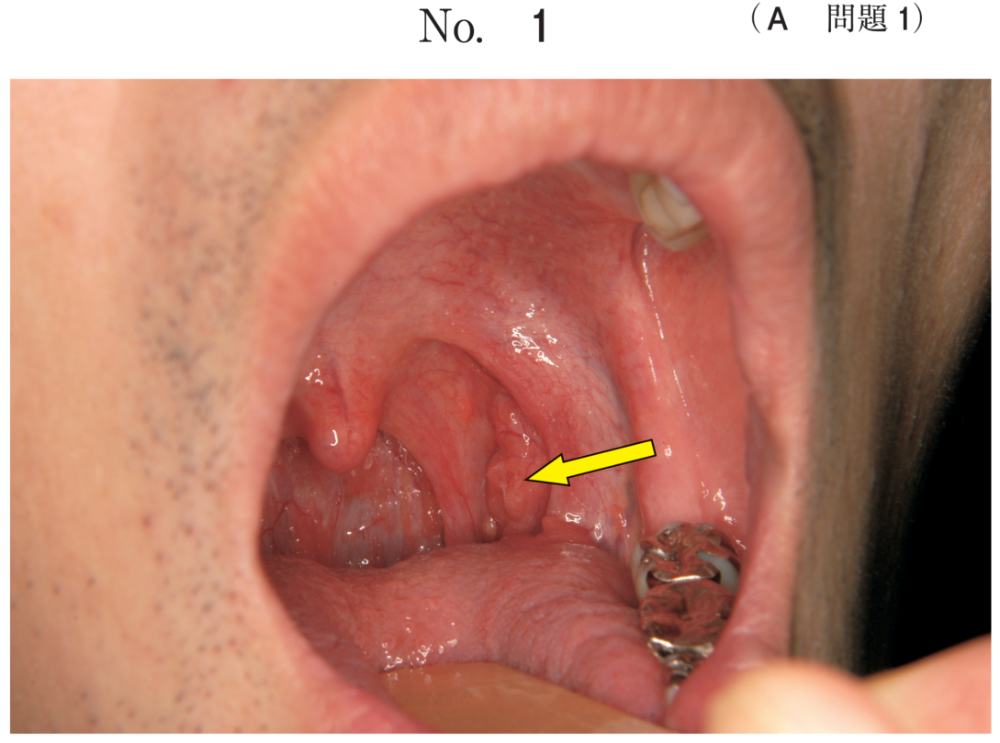
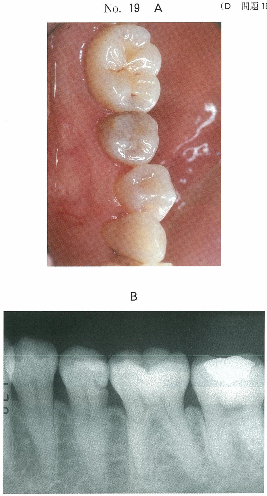

口腔潜在的悪性疾患
概念
口腔潜在的悪性疾患（oral potentially malignant disorders：OPMDs）とは、将来的に癌化する可能性を秘めた病変・状態の総称である。WHOは従来「前癌病変」と「前癌状態」に分けていたが、2005年以降は口腔潜在的悪性疾患という統一概念で扱うようになった。
- 前癌病変（precancerous lesion）：白板症、紅板症
- 前癌状態（precancerous condition）：癌化リスクが高い全身的・局所的状態
- 臨床写真＋病理組織像のセットで「切除」を選ばせる出題が頻出
旧WHO分類：前癌病変と前癌状態
前癌病変（precancerous lesion）
正常とは異なる形態を示す限局性の組織変化で、すでに癌化しつつあるか、将来癌が発生しやすい病変。
| 疾患 | 癌化率 | 特徴 |
|---|---|---|
| 白板症 | 4.4〜17.5% | 摩擦で除去できない白色病変。不均一型は癌化率が高い |
| 紅板症 | 40〜50% | 口腔粘膜疾患中で最も癌化率が高い |
前癌状態（precancerous condition）
癌の発生リスクが有意に高い全身的または局所的な状態。
| 疾患 | 要点 |
|---|---|
| 鉄欠乏症 | Plummer-Vinson症候群。上部消化管の粘膜萎縮による嚥下障害 |
| 口腔扁平苔癬 | 癌化率2〜6%程度。口腔扁平苔癬様病変（oral lichenoid lesion）も含む |
| 口腔粘膜下線維症 | ビンロウジ（betel nut）の咀嚼習慣。東南アジアに多い |
| 梅毒 | 梅毒性舌炎から扁平上皮癌が生じることがある |
| 色素性乾皮症 | 常染色体劣性遺伝。DNA修復機能の障害。紫外線感受性 |
| 円板状エリテマトーデス | 口唇や頬粘膜に発生 |
| 萎縮性表皮水疱症 | Hallopeau-Siemens型。常染色体劣性遺伝。口腔粘膜にも水疱 |
白板症（口腔白板症）
定義（1978年WHO）
口腔粘膜に生じた摩擦によって除去できない白色の板状あるいは斑状の角化性病変で、臨床的あるいは病理組織学的に他のいかなる疾患にも分類されないもの。
臨床分類
| 大分類 | 小分類 | 特徴 |
|---|---|---|
| 均一型 homogeneous | 平坦型 flat type | 平滑な白色病変。癌化率は比較的低い |
| 波型 corrugated type | しわ型 wrinkled typeなども含む | |
| 不均一型 non-homogeneous | 疣贅型 verrucous type | 表面が疣贅状。癌化率が高い |
| 結節型 nodular type | 結節を伴う | |
| 潰瘍型 ulcerated type | びらん・潰瘍を伴う。癌化リスク高い | |
| 紅斑混在型 erythroleukoplakia | 白色と紅色が混在 |
不均一型は均一型より癌化しやすく、特に増殖性疣贅型白板症（PVL）や紅斑混在型は癌化率が高い。
好発部位
頬粘膜、舌、口底、口唇、歯肉、歯槽粘膜。50〜70歳代に多く、男性に多い（女性の約2倍）。
上皮異形成の診断基準（WHO 2005）
| 組織構造の変化 | 細胞特性の変化 |
|---|---|
| 不整な上皮の重層化 | 核の大きさの不整 |
| 基底細胞の極性の喪失 | 核形態の不整（nuclear pleomorphism） |
| 滴状型の上皮脚 | 細胞の大きさの不整 |
| 核分裂像の増加 | 細胞形態の不整（cellular pleomorphism） |
| 異常な表層の核分裂 | 核/細胞質比の増加 |
| 単一細胞における未成熟角化（dyskeratosis） | 核の増大 |
| 上皮突起内の角化真珠 | 異常な核分裂像 |
| 核小体の増加と増大 | |
| 核クロマチン量の増加 |
上皮異形成は軽度（mild）・中等度（moderate）・高度（severe）に分類され、高度上皮異形成を示す口腔白板症の癌化率は高い。
白板症の治療
- 誘因と考えられるものがあれば除去し、経過観察する
- 結節状や疣状で上皮異形成が疑われる場合 → 生検
- 中等度〜高度異形成と診断された場合 → 粘膜の外科的切除
- 凍結療法やレーザー治療が行われることもある
- ビタミンA誘導体（13-cis-レチノイン酸）が有効との報告あり（副作用として不妊症あり、ICが必要）
紅板症
紅板症 erythroplakia は紅色肥厚症ともよばれ、ビロード状の紅斑として生じる口腔粘膜病変である。
- 癌化率は口腔粘膜疾患の中で最も高く、40〜50%
- 好発部位：頬粘膜、舌、口底、口腔底、歯肉、歯槽粘膜。50〜60歳代に多い
- 病理組織学的には著明な上皮層の菲薄化を伴い、さまざまな程度の上皮異形成を示す
- 上皮内に限局した上皮内癌（CIS）を呈する場合もある
紅板症の治療
高率に癌化するため放置せず、外科的切除を行う。術後は長期間にわたる経過観察が必要。
癌化の分子メカニズム
頭頸部扁平上皮癌の発生には多段階の遺伝子変化が関与する（Califano Jら, 1996）。
- 染色体9pの欠失（p16）→ 上皮過形成
- 3p, 17pの欠失（p53）→ 異形成
- 11q, 13q, 14qの欠失（cyclin D1, Rb）→ 上皮内癌
- 6p, 8p, 4qの欠失 → 浸潤癌
E-カドヘリン遺伝子の発現低下も癌化の進行と関連し、浸潤・転移に関わる。
過去問
前癌病変はどれか。2つ選べ。
b 紅板症
c 粘膜下線維症
d 円板状エリテマトーデス
e Plummer-Vinson症候群
【解説】前癌病変（precancerous lesion）は白板症と紅板症の2つ。c〜eは前癌「状態」（precancerous condition）であり、病変そのものではなく癌化リスクが高い全身的・局所的状態を指す。前癌病変と前癌状態の区別が問われている。
42歳の男性。右側舌縁部の白斑を主訴として来院した。2年前から白色病変を生じ、2か月前から疼痛を自覚しているという。初診時の口腔内写真（別冊No.5A）と生検時のH-E染色病理組織像（別冊No.5B）とを別に示す。 適切な対応はどれか。1つ選べ。


b 副腎皮質ステロイド軟膏の塗布
c 抗真菌薬の内服
d レーザーによる蒸散
e 切 除
【解説】舌縁部の白斑で2年の経過があり、2か月前から疼痛出現。口腔白板症の経過中に疼痛が出現した場合は、癌化を疑う。生検で上皮異形成が高度であれば外科的切除が適切。経過観察やステロイド軟膏では対応不十分であり、抗真菌薬は白板症の治療にはならない。
口底部の疼痛を主訴として来院した患者の口腔内写真（別冊No.5A）と生検時のH−E染色病理組織像（別冊No.5B）とを別に示す。 適切な対応はどれか。1つ選べ。


b アズレンスルホン酸ナトリウム含嗽
c 副腎皮質ステロイド軟膏塗布
d 切除術
e 放射線治療
【解説】口底部の病変に対して生検を行い、病理組織像で上皮異形成が認められる。口腔潜在的悪性疾患として切除術が適切。含嗽やステロイド軟膏は悪性化リスクのある病変には不適切。放射線治療は悪性腫瘍に対する治療であり、前癌病変の段階では選択しない。
75歳の女性。下顎右側臼歯部の違和感を主訴として来院した。10年前から同じ義歯を使用しているという。初診時の口腔内写真（別冊No.24A）と生検時のH-E染色病理組織像（別冊No.24B）とを別に示す。 患者への説明で適切なのはどれか。1つ選べ。


b 「真菌をとるうがい薬を出しましょう」
c 「悪性なので下顎の骨と一緒に切除しましょう」
d 「悪性化するといけないので病変部を切除しましょう」
e 「口内炎なので副腎皮質ステロイド軟膏を塗りましょう」
【解説】10年間同じ義歯を使用 → 慢性的な刺激が原因として考えられる。生検で上皮異形成が認められており、悪性化のリスクがある。「悪性なので骨と一緒に切除」（c）は過剰な治療であり、現時点では前癌病変の段階。「悪性化するといけないので切除」（d）が最も適切な説明と対応である。経過観察のみや対症療法では不十分。